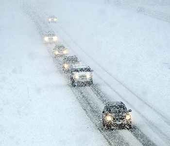
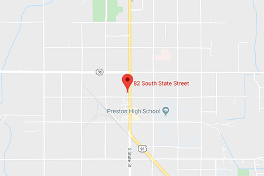

WINTER WEATHER ADVISORIES ISSUED FOR EAST IDAHO'S HIGHLANDS BECAUSE OF INCOMING STORM
The National Weather Service is warning the public to prepare for a winter storm that's expected to hit East Idaho on Saturday morning and continue through Sunday morning.
The storm is forecast to bring rain, snow and 40 mph winds to East Idaho, with the higher elevations getting mostly snow and the lowlands receiving mostly rain.
The weather service has issued winter weather advisories for East Idaho's higher elevations because of the storm.

Weather Works
82 S State St,
Preston, ID 83263
contact@weatherworks.net